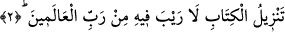

işârettir.
Baklî (r.h.) der ki: “Elif”, i‘lâma, yâni bildirmeye; “Lâm”, lüzûma, yâni
gerekliliğe/zarûrete; “Mîm” ise mülke, yâni saltanat ve hükümranlığa işârettir. Yâni,
Hak Teâlâ bütün varlıklara, kul olmalarının zarûretini bildirdi. Onlara kahr ve cebr
yoluyla mâlik ve hükümran oldu da isteseler de istemeseler de O’na ibâdet ettiler. Bilen
isim tecellîsine mazhar oldu, ibâdet eden sıfat tecellîsine, O’nun mûrâdına râm olan ise
zât nûruna mazhar oldu.
et-Te’vîlâtü’n-Necmiyye’de şöyle denilir: “Elif” ile şu hususa işâret etmektedir:
Muhabbet ehli, benim kurbetime/yakınlığıma ülfet etti. Onun için benden ayrı kalmaya
sabredemezler. Ârifler, benim temcîdime, beni yüceltmeye ülfet etti. Onun için benden
başkasıyla ünsiyet ve dostluk kuramazlar. “Lâm”daki işâret şudur: Ben beni sevenler
için likâmı/vuslatımı hazırladım; artık onlar benim safâm üzere devam etsinler, isterse
ahdime vefâ konusunda eksiklikler içinde olsunlar aldırmam. “Mîm”deki işâret şudur:
Velîlerim benim murâdım uğruna kendi isteklerini terk ettiler. İşte bu sebeple ben de
onları bütün kullarıma tercih ettim.”
Keşfü’l-esrâr’da şöyle denilmiştir: “Rivâyet olunur ki Yüce Allah, Mustafa (a.s.)’nın
fıtrat nurunu yarattığında, istediği kadar onu kendi huzûr-i izzetinde tuttu.”
Allâh’ın huzurunda yüz bin yıl -diğer bir görüşe göre iki bin yıl- kaldı. Bu müddet
zarfında her gün yetmiş bin rabbânî nazar onu kaplıyordu. Her nazarda yeni bir nûr ve
yeni bir ikrama mazhar oluyordu. O nazarlarda onun fıtrat sırrına şu söylenmiştir: “(Ey
Habîbim!) Kur’ân’ın izzeti senin ismetinin mertebedârı olacaktır (mertebesini
tutacaktır).” O haber, o müjde, onun fıtratında sâbit olmuştu. Onun ayn-ı tıyneti, fıtratının
sırrı ile bu âleme gelince ve dergâh-ı izzetten Kur’ân nâzil olunca Hz. Peygamber (s.a.):
“Ey Rabbim, ümit olunur ki bu Kur’ân bana o zaman verilen vaadin
gerçekleşmesidir.” buyurdu. Onun gönlünü teskîn etmek ve düşüncesini tasdik etmek
üzere “Elif. Lâm. Mîm.” âyeti gönderildi. “Elif” Allâh’a, “Lâm” Cebrâil’e, “Mîm” de
Muhammed’e işârettir. Bununla Hak Teâlâ şunu murad etti: Benim ülûhiyyetime,
Cebrâil’in kudsiyyetine ve ey Muhammed senin şan ve şerefine yemin ederim ki bu,
senin nübüvvetinin mertebesini ve sâhip olacağın devletin mûcizesini göstermek üzere
vaadettiğimiz vahiy ve Kur’ân’dır.
Tefsir ehli “Elif. Lâm. Mîm.” “Bu sûre “Elif. Lâm. Mîm” adlı sûredir.” demektir,
demişlerdir.
2. Bu Kitab’ın, âlemlerin Rabbi tarafından indirilmiş olduğunda asla şüphe yoktur.
“Bu Kitab’ın,” Kur’ân’ın “âlemlerin Rabbi tarafından indirilmiş olduğunda”
ibret/ders alanlar nezdinde “asla şüphe yoktur.”